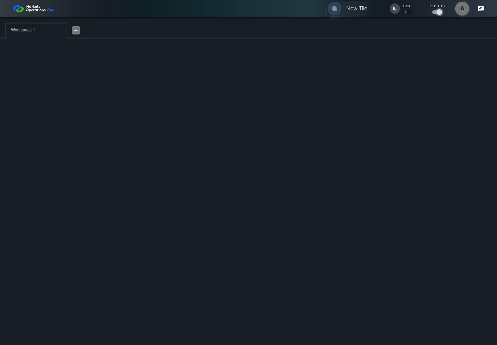

UX-019 keyboard and accessibility probe
PASS · application/run-050/ux-019-keyboard-and-accessibility-probe-45a2243c2d18-attempt-1 · ACTUAL_APPLICATION_LOCAL_SERVICES
Actual React shell. Controlled catalog, user identity, photo failures, and SystemJS tenant. Chromium only. Accessibility and layout outcomes are proposed probes; no approved conformance standard is inferred.
2026-10-22T06:11:38.826Z to 2026-10-22T06:11:41.329Z
Assertions and result · Artifact manifest · Exact run inputs and source hashes
Result SHA-256:f03de85410b57810a57a5ee2d5f757d7933a0de588aa6076b24d6f394eadf813Machine observations
- focus-trace-forward.json
c538bfb12f9929d05be1f8553912260c7c1b0d1fe1aacb02607fac6a3eaf345e
Screenshot capture: CAPTURED. Named frames: 14.
Step screenshot evidence: COMPLETE. 3/3 canonical steps have execution screenshots.
Canonical step timeline
Given USER-A has dark theme on Home
Execution: PASSED.
1. step-01 Visible state after step 1: Given USER-A has dark theme on Home
2026-10-22T06:11:40.216Z · 1440×1000
Step: /Users/lushevol/code/github/ratan-release-impact/workbench/tasks/ui-test-coverage-20261022/test-cases.md:12867
SHA-256:365bc064ef8cf5c078cc86e5b2ea3862073c96c42997e29e292354516d2ec559When USER-A presses "Tab" through the enabled controls inside the section with test ID "${MFE_APP_PREFIX_STYLE}_appBar" on the Home page
Execution: PASSED.
2. focus-forward-1 Live keyboard focus checkpoint; computed CSS is retained separately.
2026-10-22T06:11:40.377Z · 1440×1000
Step: Named test assertion at the corresponding source location
SHA-256:f07dbd210aa61df2dd4c129d094c0066cfe8783bb7623a032b79c9914d5f7071
3. focus-forward-2 Live keyboard focus checkpoint; computed CSS is retained separately.
2026-10-22T06:11:40.451Z · 1440×1000
Step: Named test assertion at the corresponding source location
SHA-256:daf2a6b353a0a9870a6c760112ca4c74d678c62b6516a84bc0657c1867032007
4. focus-forward-3 Live keyboard focus checkpoint; computed CSS is retained separately.
2026-10-22T06:11:40.528Z · 1440×1000
Step: Named test assertion at the corresponding source location
SHA-256:72fb39f4718feb5739ceb7c8904d9bc1edd3a1d79892eea34c937d57ab198b0b
5. focus-forward-4 Live keyboard focus checkpoint; computed CSS is retained separately.
2026-10-22T06:11:40.597Z · 1440×1000
Step: Named test assertion at the corresponding source location
SHA-256:2dc2f4d012b66fae5a68ff356b31882c1d2b5e43b28ff15a8fb91e343354bda8
6. focus-forward-5 Live keyboard focus checkpoint; computed CSS is retained separately.
2026-10-22T06:11:40.672Z · 1440×1000
Step: Named test assertion at the corresponding source location
SHA-256:2dc2f4d012b66fae5a68ff356b31882c1d2b5e43b28ff15a8fb91e343354bda8
7. focus-forward-6 Live keyboard focus checkpoint; computed CSS is retained separately.
2026-10-22T06:11:40.727Z · 1440×1000
Step: Named test assertion at the corresponding source location
SHA-256:3e07924545b97b91e118d9c582d9c9f9d8dab5fe5c4ec58958476a783cdbbd968. focus-forward-7 Live keyboard focus checkpoint; computed CSS is retained separately.
2026-10-22T06:11:40.778Z · 1440×1000
Step: Named test assertion at the corresponding source location
SHA-256:9d8ae8dd9866072eb124d53c4da567c1d0e6dd2f85ffac04a82c46e516104e3d9. focus-forward-8 Live keyboard focus checkpoint; computed CSS is retained separately.
2026-10-22T06:11:40.827Z · 1440×1000
Step: Named test assertion at the corresponding source location
SHA-256:15411b862ee39f8a2dc8c1d71b7706f7eaea4ffeb8a122d5ef08083b8d875f6f
10. focus-forward-9 Live keyboard focus checkpoint; computed CSS is retained separately.
2026-10-22T06:11:40.891Z · 1440×1000
Step: Named test assertion at the corresponding source location
SHA-256:15411b862ee39f8a2dc8c1d71b7706f7eaea4ffeb8a122d5ef08083b8d875f6f
11. focus-forward-10 Live keyboard focus checkpoint; computed CSS is retained separately.
2026-10-22T06:11:40.941Z · 1440×1000
Step: Named test assertion at the corresponding source location
SHA-256:15411b862ee39f8a2dc8c1d71b7706f7eaea4ffeb8a122d5ef08083b8d875f6f12. step-02 Visible state after step 2: When USER-A presses "Tab" through the enabled controls inside the section with test ID "${MFE_APP_PREFIX_STYLE}_appBar" on the Home page
2026-10-22T06:11:40.989Z · 1440×1000
Step: /Users/lushevol/code/github/ratan-release-impact/workbench/tasks/ui-test-coverage-20261022/test-cases.md:12868
SHA-256:8facaf530002aa1cf265b74257f72760f3601515dadd8f1e6f5d3120e5fc3b88Then Every focus trace checkpoint contains a visible focus indicator
Execution: PASSED.13. step-03 Visible state after step 3: Then Every focus trace checkpoint contains a visible focus indicator
2026-10-22T06:11:41.039Z · 1440×1000
Step: /Users/lushevol/code/github/ratan-release-impact/workbench/tasks/ui-test-coverage-20261022/test-cases.md:12869
SHA-256:406918b2eb2c970bdf3d6312d7ef32b6e85376c29b55bc556c38c480b8ca0fdb
Additional named frames

The final visible state after the named test assertions.
2026-10-22T06:11:41.103Z · 1440×1000Step: Test source: /Users/lushevol/code/github/ratan-release-impact/workbench/e2e/audit-specs/ux-shell.spec.ts:39
SHA-256:
406918b2eb2c970bdf3d6312d7ef32b6e85376c29b55bc556c38c480b8ca0fdbScreenshots establish visible state only. Assertions and traces support functional claims.